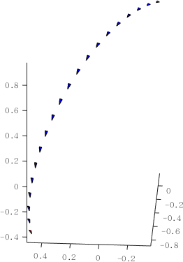
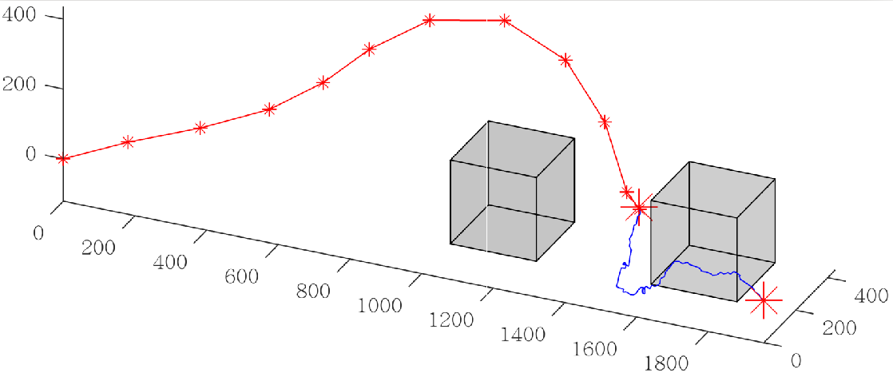

目的
- 在$\rm SE(3)$定义合适的距离,采样函数,以及采样点插值.
参考[1]
大致思路
- 对$\rm SO(3)$均匀采样(欧拉角,四元数)

- Distance metics on $\rm SE(3)$ and geodesic interpolation function for rotations.

一个数值小实验
考虑22自由度蛇形机械臂的路径规划问题,采用RRT算法:

注:
- $\rm SE(3)$上的快速搜索随机生成树
1.记初始位姿 $Q_0\in \rm SE(3)$ 为随机树 $T$ 根结点.
2.预先给定某阈值 $p \in (0,1]$ . 随机生成某数 $p_c \in (0,1)$ , 若 $p_c\leq p$, 则在工作空间中随机采样, 采样点记为 $Q_{rand}$ ; 否则直接取定目标位姿为采样点 $Q_{rand}$ .树$T$中距离${Q_{rand}}$ 最近的结点记为 $Q_{father}$, 记由 $Q_{father}.{x}$指向 ${Q_{rand}}.{x}$方向上步长为$p_{step}$处的结点为$Q_{new}.{x}$.
$Q_{new}.R$可利用四元数与旋转矩阵的关系插值给出, 其中$Q_{}.{x}$和$Q_{}.{R}$分别表示采样点$Q_{*}$位置和姿态.
3.若机械臂位姿$Q_{new}$不与障碍物发生碰撞, 则将$Q_{new}$插入树$T$.
重复采样直至$T$到达目标位姿, 从而获得一条由${Q_0}$到目标位姿${Q_d}$的规划路径.
- 如上图,数值小实验可优化的空间在于
- do smoothing before using the path.从上图可以看到,RRT的路径不光滑,也存在走”弯路”的情况.所以在应用时,应该考虑对路径做一些处理,如shortcutting,其思路是:随机连接生成树路径的采样点,如果该’线段’可行,则更新到路径中”.
具体的,参见 see: http://www.osrobotics.org/osr/planning/post_processing.html
[1]: Effective sampling and distance metrics for rigid body path planning